Leafy Green
-
Spinach
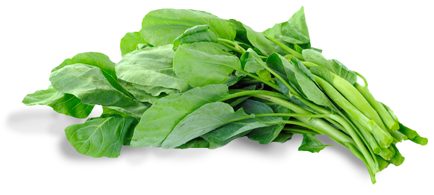 -
Cabbage
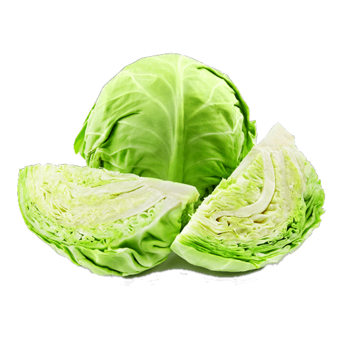 -
Beet Greens
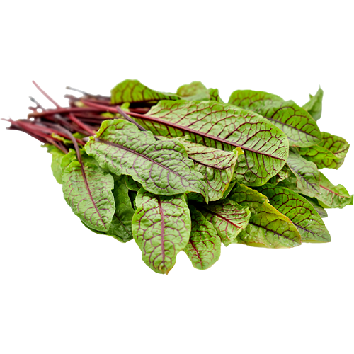 -
Watercress
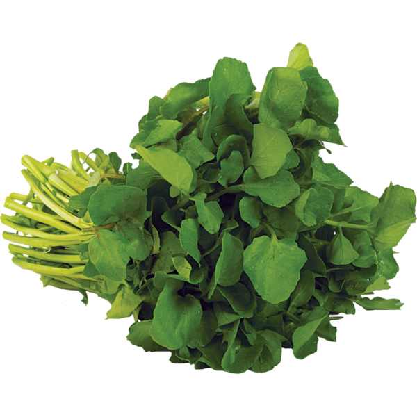 -
Romaine Lettuce
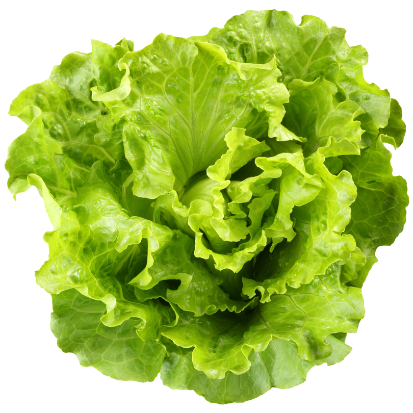 -
Kale
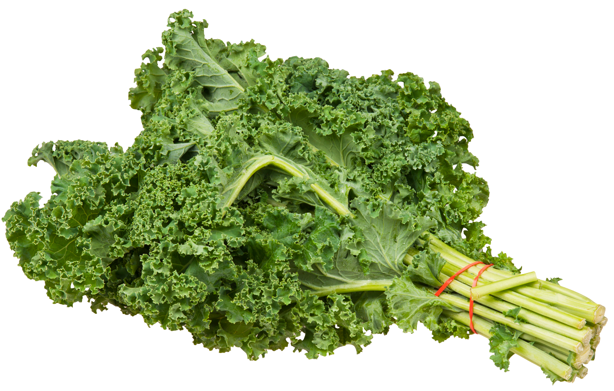 -
Coriander

-
Chard
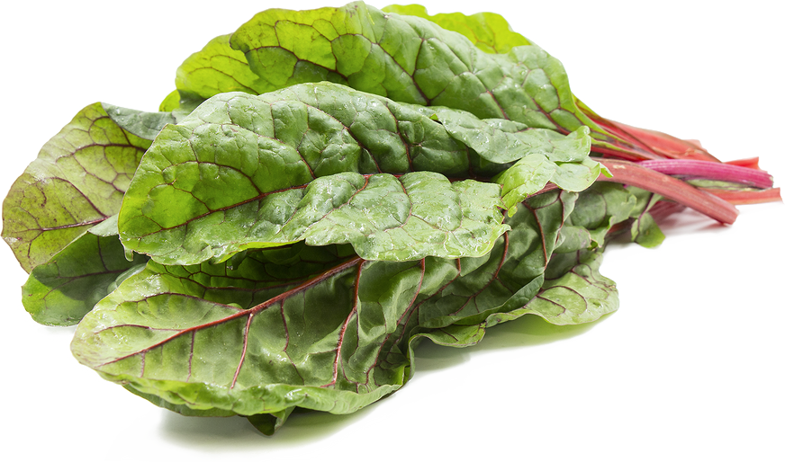 -
Turnip Greens

-
Arugula
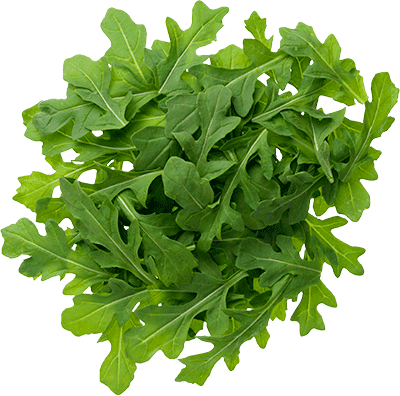 -
Collard Greens
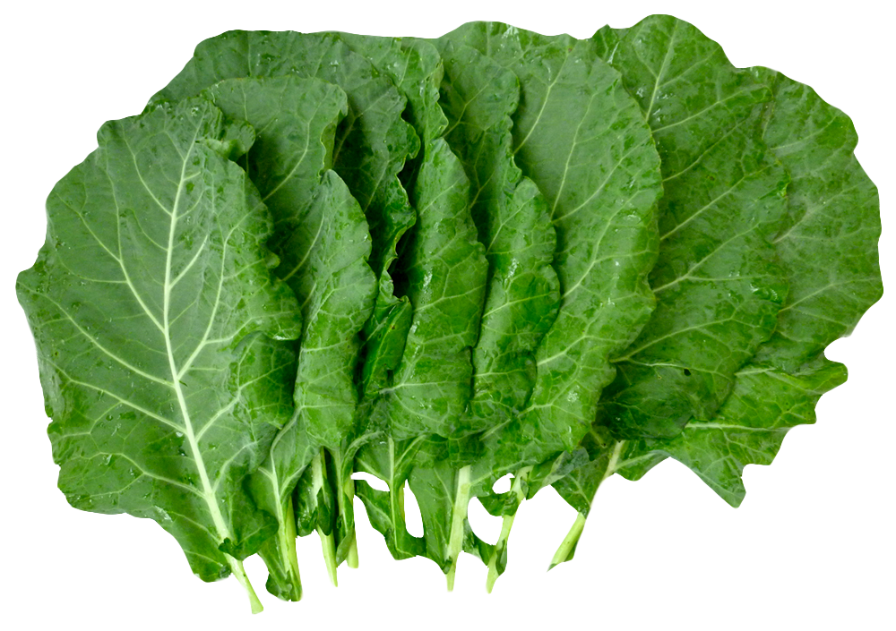 -
Mustard Greens
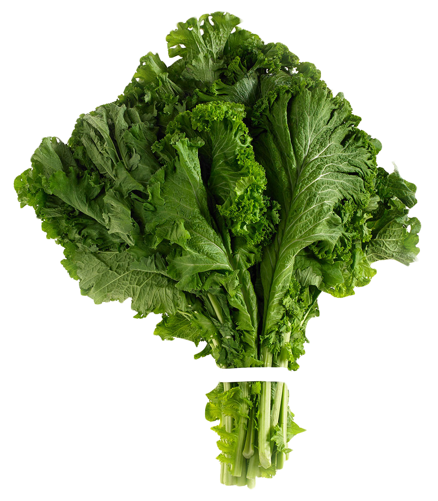 -
Broccoli
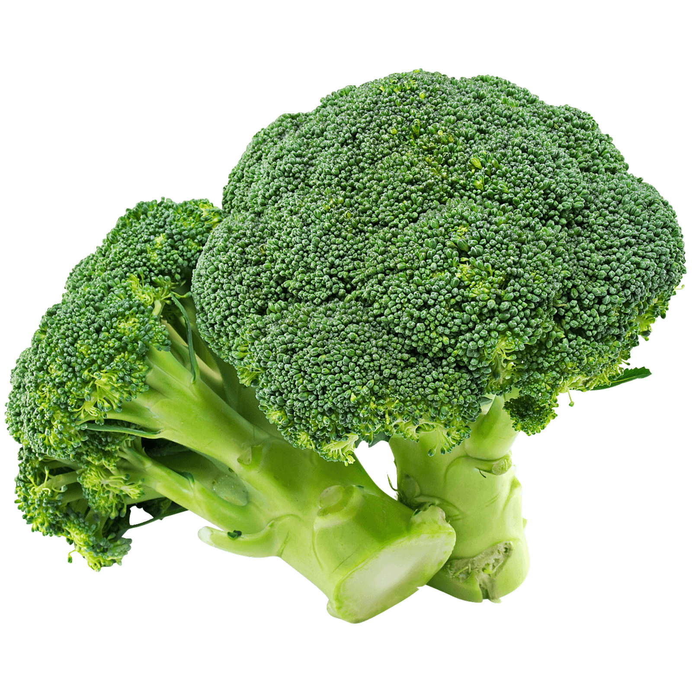 -
Bok choy
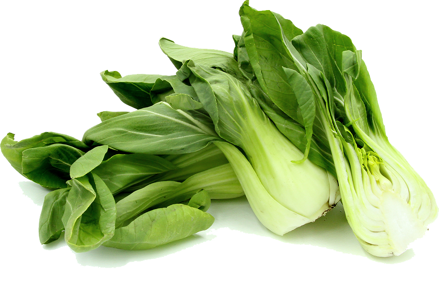 -
Endive
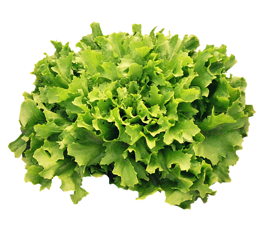 -
Dandelions Greens
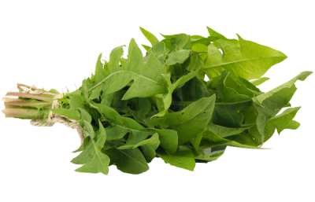
Coriander
Coriander is an herb that's commonly used to flavor international
dishes. It comes from the Coriandrum sativum plant and is
related to parsley, carrots, and celery. In the United States,
Coriandrum sativum seeds are called coriander, while its leaves
are called cilantro. The plant is also known as Chinese parsley.
Coriander is an annual herb in the family Apiaceae. It is also
known as Chinese parsley, dhania or cilantro. All parts of the
plant are edible, but the fresh leaves and the dried seeds (as a
spice) are the parts most traditionally used in cooking.
Most people perceive the taste of coriander leaves as a tart,
lemon/lime taste, but to nearly a quarter of those surveyed, the
leaves taste like dish soap, linked to a gene which detects some
specific aldehydes that are also used as odorant substances in
many soaps and detergents. Raw coriander leaves are 92% water,
4% carbohydrates, 2% protein, and less than 1% fat (table). The
nutritional profile of coriander seeds is different from the
fresh stems or leaves. In a 100-gram (3+1⁄2 oz) reference
amount, leaves are particularly rich in vitamin A, vitamin C and
vitamin K, with moderate content of dietary minerals (table).
Although seeds generally have lower vitamin content, they do
provide significant amounts of dietary fiber, calcium, selenium,
iron, magnesium and manganese.
To know
more
Turnip Greens
Turnip greens offer a wide range of nutrients with important health benefits. These include: Vitamin K: Turnip greens and other leafy green vegetables are rich sources of vitamin K. This vitamin plays a crucial role in bone metabolism, vascular health, and normal blood coagulation.